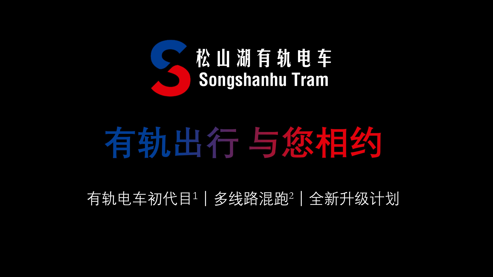
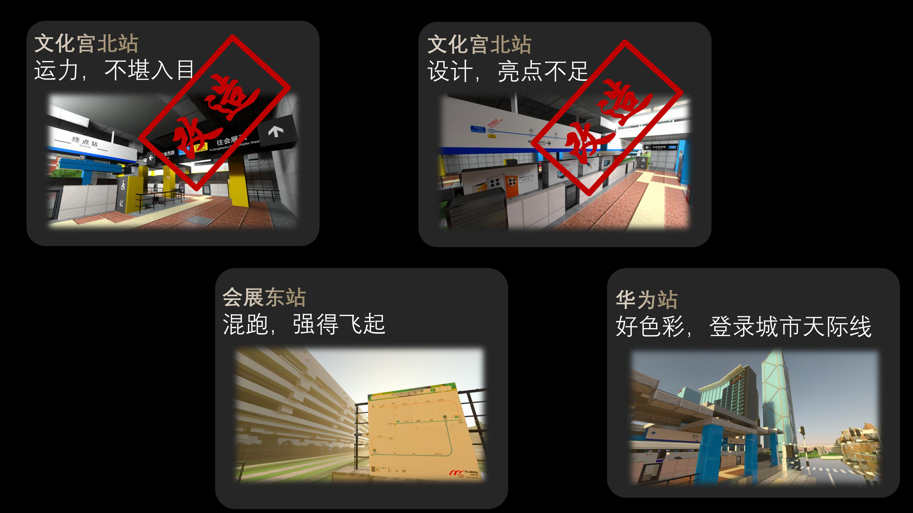
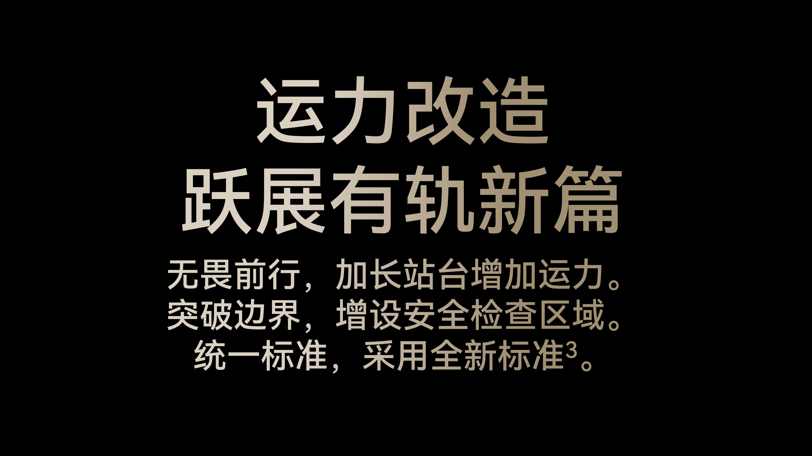
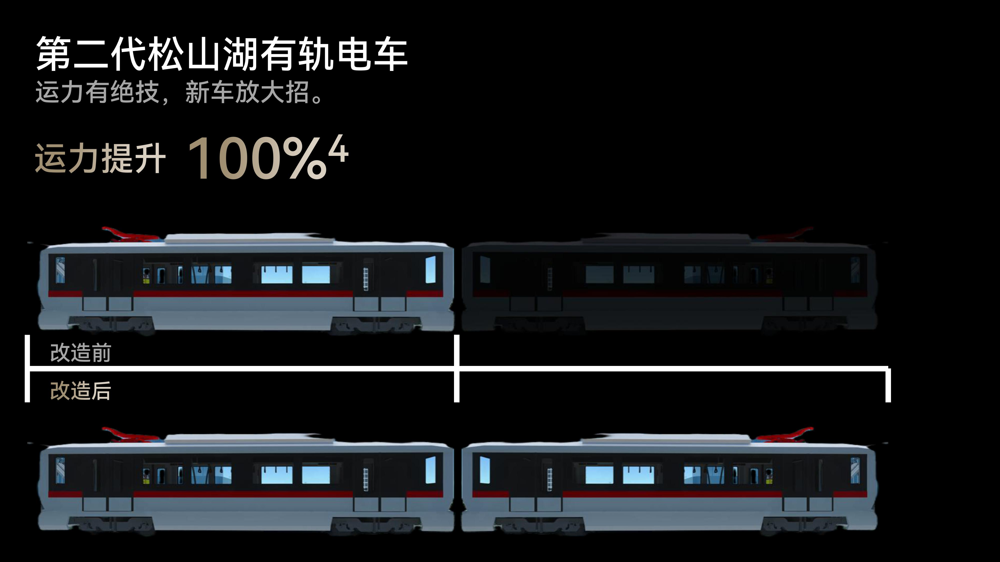
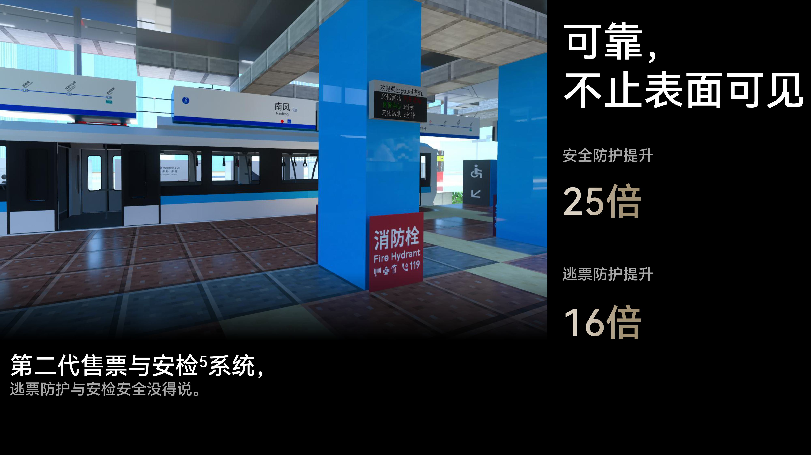
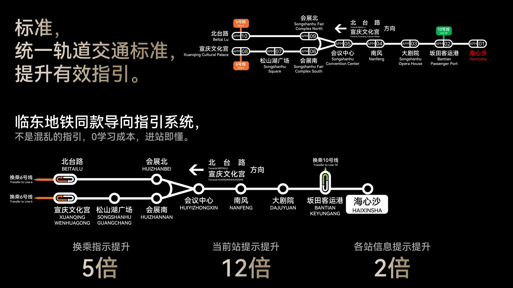
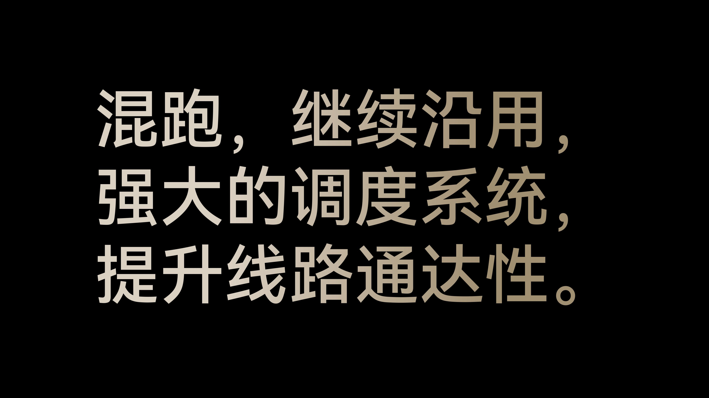
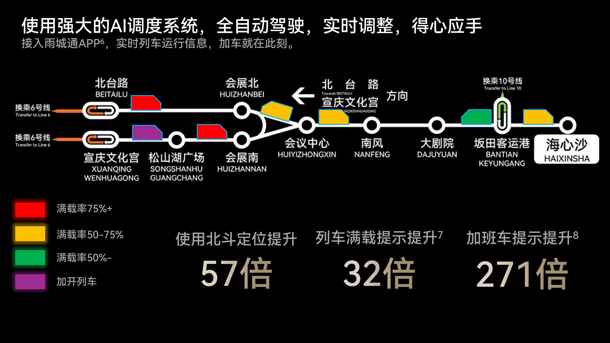
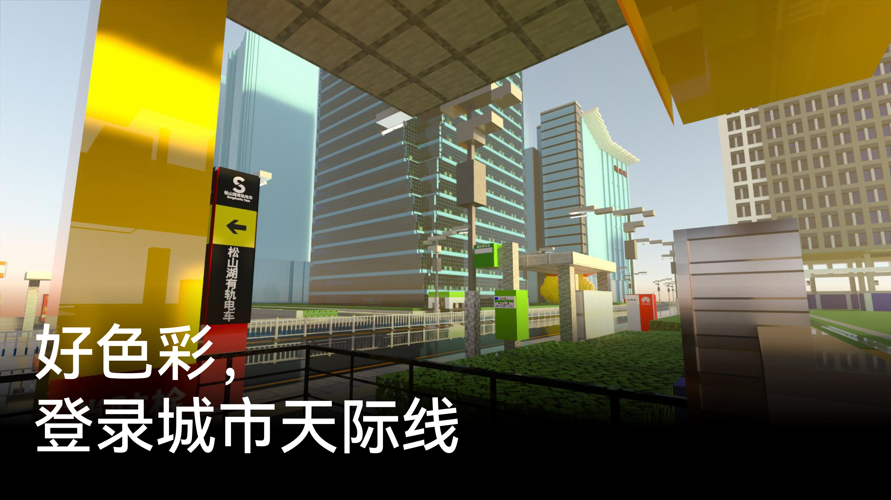
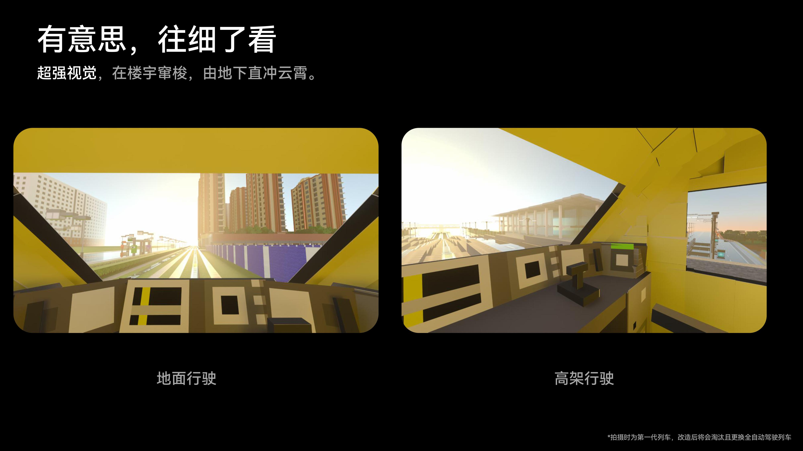
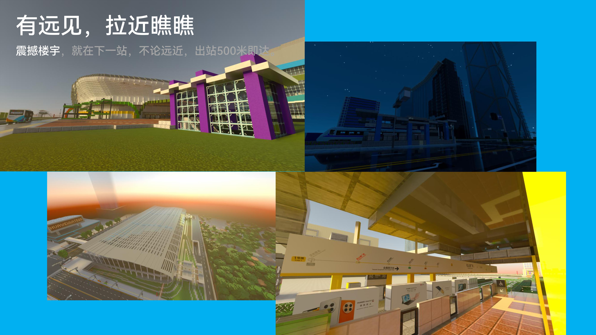
![尊享服务
乘车优惠
全国一卡通可享受9.5折优惠。雨城通在一个自然月内乘坐松山湖线、松山湖窜梭巴士满15次后，第16次至30次乘坐松山湖线、松山湖窜梭巴士可享受8.8折优惠，第31次后乘坐松山湖线、松山湖窜梭巴士可享受6折优惠。学生卡、50至65岁老年人优待卡、残疾人乘车优惠证、片区企业联盟员工卡乘车享受5折优惠。65岁以上老年人卡、重度残疾人优惠证可享受免费乘车。
车票种类
单程票：票价3元，进闸回收。
一日票：每张10元，首次进闸24小时内无限次数乘坐松山湖线与松山湖窜梭巴士。
三日票：每张25元，首次进闸72小时内无限次数乘坐松山湖线与松山湖窜梭巴士。
----
1.第一代有轨电车指的是松山湖园区内首次建设运营的有轨电车。
2.多线路混跑是在第一代有轨电车时，为了提升线网通达性从而增加的运营模式。
3.全新的标准是采用临东地铁的车站导向指引的标准。
4.运力相对于上一代提升的幅度。
5.配备安检设施，安全防护重中之重。
6.该功能需应用支持，请以实际体验为准。
7.列车采用全新AI计数载客率，通过监控算法自动计算。
8.列车加车在上一代中没有体现，在本次改造中体现出。该功能需应用支持，请以实际体验为准](../content/res/250221松山湖有轨电车公布改造计划/11.jpg)










